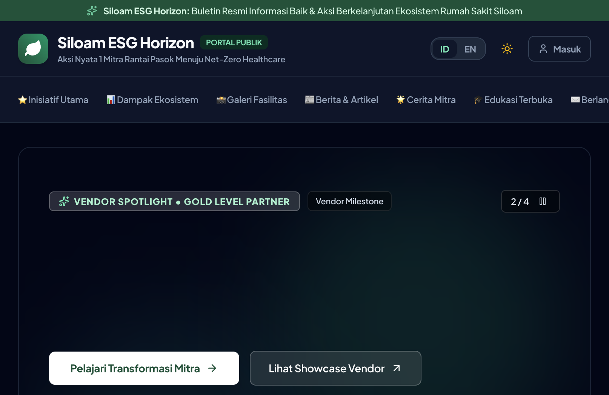
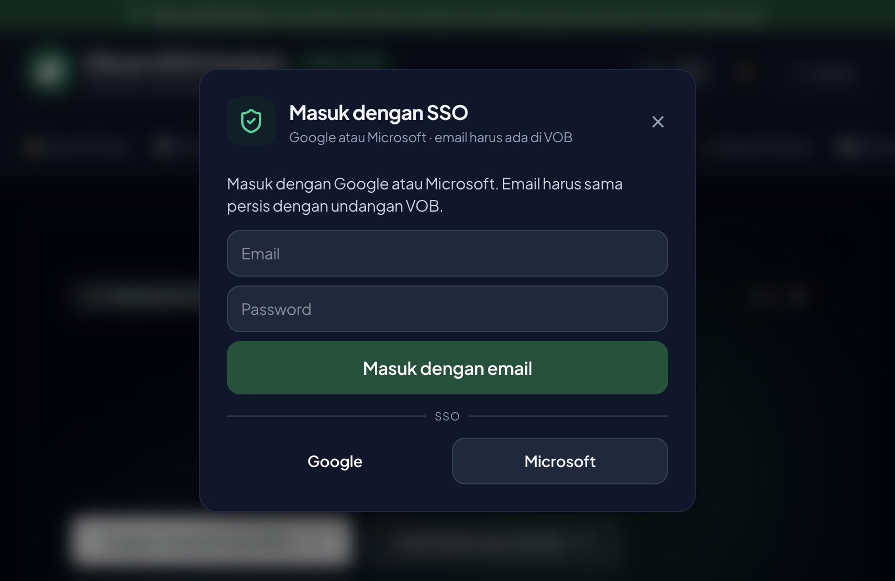
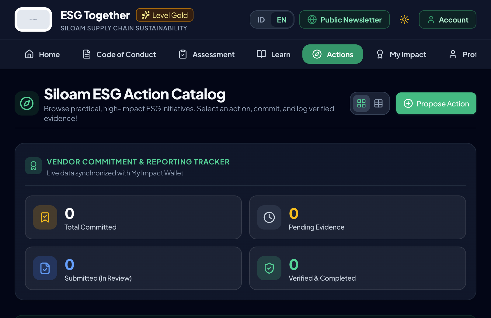
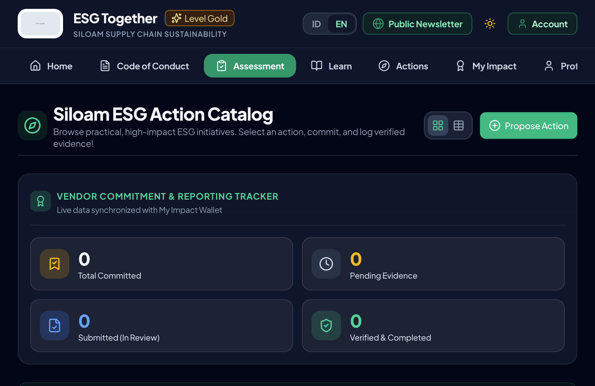
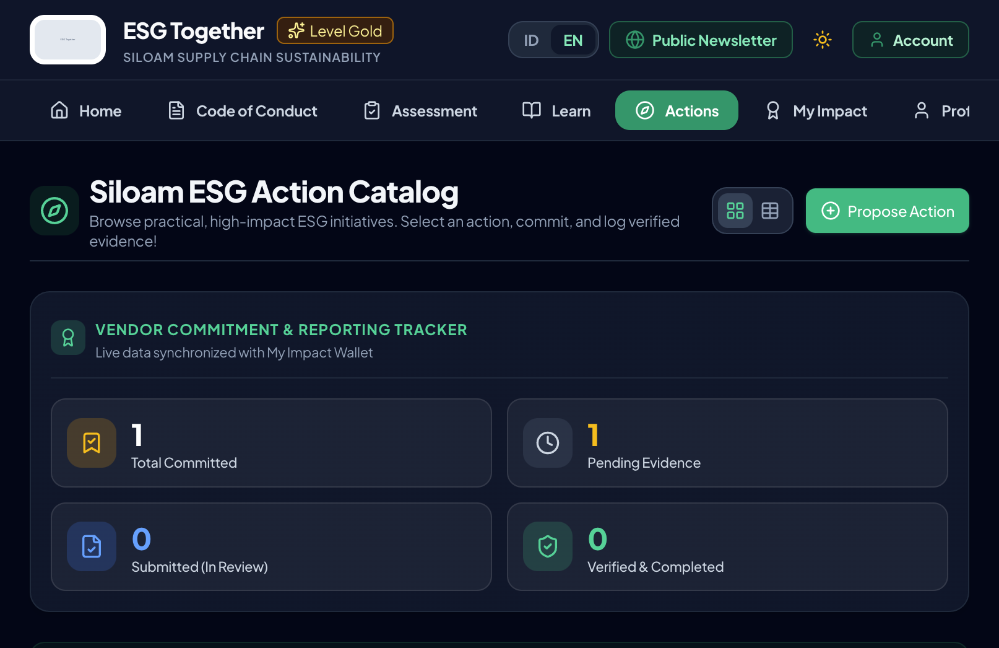

USER ACCEPTANCE TESTING (UAT)
Manual Book Pengujian
Siloam ESG Horizon
Portal ESG Together — Undangan Mitra & Operator Siloam
URL pengujian:
https://esg-together.cgp-ai.com/
Versi: 16 September 2026
Untuk: organisasi testing (non-teknis / awam)
Laporan issue: chat ke PIC project (Vebri)
1. Apa yang sedang diuji?
Siloam ESG Horizon adalah portal undangan-only untuk mitra rantai pasok Siloam agar bisa:
- Melihat berita & konten publik ESG
- Masuk ke Portal Mitra (asesmen, belajar, aksi ESG, dampak, kode etik)
- Masuk ke Admin CMS (khusus operator Siloam) untuk review & kelola konten
Penting: ini bukan pendaftaran publik. Akun testing sudah disiapkan.
Jangan daftar email sembarangan — gunakan akun di tabel bawah.
2. Akun testing yang dipakai
Password bersama untuk semua akun UAT di bawah:
Password: EsgUat-Nusa-2026x
| Peran |
Email login |
Yang harus terlihat |
Fokus uji |
PIC Vendor
vendor_admin |
pic.uat@esg-together.test |
Portal Mitra Vendor (PT Nusantara Pro) |
Alur mitra lengkap (utama untuk org testing) |
Staff Vendor
vendor_member |
staff.uat@esg-together.test |
Portal Mitra (tanpa Admin CMS) |
Baca & ikut aksi / belajar |
Reviewer Siloam
admin |
admin.uat@esg-together.test |
Menu operator (overview); CMS penuh hanya super |
Review / overview |
Super Admin
super_admin |
super.uat@esg-together.test |
Admin CMS penuh |
CMS, roster, audit, katalog |
Catatan: Login Google/Microsoft hanya untuk email yang sudah diundang VOB (produksi).
Untuk UAT org awam, pakai email + password di atas saja.
3. Cara masuk (semua peran)
- Buka https://esg-together.cgp-ai.com/
- Di pojok kanan atas, klik tombol Masuk (header publik hanya menampilkan Masuk sebelum login).
- Isi Email + Password akun testing → klik Masuk dengan email.
- Setelah berhasil, header berubah: muncul Akun, lalu tombol Portal Mitra Vendor (dan Admin CMS hanya untuk super admin).
- Klik tombol portal sesuai peran Anda.

Gambar 1 — Halaman publik. Perhatikan hanya tombol Masuk (belum login).

Gambar 2 — Form login email/password untuk akun UAT.
4. Skenario bisnis proses (checklist)
A. Pengunjung publik (tanpa login)
- Landing terbuka, carousel/hero bergerak atau bisa digeser
- Menu: Inisiatif, Dampak, Galeri, Berita, Cerita Mitra, Edukasi, Berlangganan
- Ganti bahasa ID ↔ EN
- Ganti tema terang/gelap
- Tombol Portal Mitra / Admin CMS tidak muncul sebelum login
B. PIC Vendor — pic.uat@esg-together.test (utama)
Setelah login → klik Portal Mitra Vendor. Uji menu satu per satu:
| Menu | Yang dilakukan | Hasil diharapkan |
|---|
| Home | Lihat ringkasan dashboard | Data perusahaan / status tampil |
| Code of Conduct | Baca & (jika diminta) tanda tangan | Konten CoC muncul; proses tanda tangan jelas |
| Assessment | Mulai / lihat hasil asesmen | Skor / maturity / rekomendasi tampil |
| Learn | Buka modul pembelajaran | Modul bisa dibuka; progress tersimpan |
| Actions | Browse katalog, commit aksi, unggah bukti jika ada | Tracker: Committed → Pending → Submitted → Verified |
| My Impact | Lihat dampak | Angka/impact tidak error |
| Profile | Cek profil & vendor PT Nusantara Pro | Nama/email/vendor benar |

Gambar 3 — Portal Mitra → menu Actions / katalog aksi & tracker komitmen.

Gambar 4 — Contoh layar di dalam Portal Mitra (navigasi Home / Assessment / Learn / Actions / …).
C. Staff Vendor — staff.uat@esg-together.test
- Bisa masuk Portal Mitra
- Tidak melihat tombol Admin CMS
- Bisa buka Learn / Actions (sesuai hak member)
D. Reviewer — admin.uat@esg-together.test
- Login berhasil
- Bisa melihat area operator / overview (sesuai hak admin)
- Catat: beberapa menu CMS penuh mungkin hanya untuk Super Admin
E. Super Admin — super.uat@esg-together.test
- Setelah login muncul tombol Admin CMS
- Masuk Admin CMS → cek tab: Corporate Grid, Excel Upload, Audit Bukti, Katalog Aksi, Micro-Learning, CMS Buletin
- Buka CMS Buletin: hero / artikel / galeri bisa dilihat

Gambar 5 — Contoh layar setelah login operator/mitra (navigasi internal). Super Admin harus melihat pintu masuk Admin CMS di header publik setelah login.
5. Cara melaporkan issue ke chat (WAJIB ikuti format)
Kirim ke PIC (Vebri) via chat. Satu bug = satu pesan (atau satu balasan beruntun). Isi minimal:
Judul: [singkat, 1 baris]
Akun: email yang dipakai (contoh pic.uat@esg-together.test)
Peran: PIC Vendor / Staff / Admin / Super Admin
Browser: Chrome / Safari / Edge + HP atau Laptop
Halaman: URL atau nama menu (contoh Portal Mitra → Actions)
Langkah:
1. ...
2. ...
3. ...
Diharapkan: ...
Yang terjadi: ...
Screenshot: (wajib tempel foto layar)
Waktu: tanggal & jam kira-kira
Contoh bagus:
Judul: Tombol “Commit Action” tidak bereaksi
Akun: pic.uat@esg-together.test (PIC)
Browser: Chrome laptop
Halaman: Portal Mitra → Actions
Langkah: buka Actions → pilih aksi LED → klik Commit
Diharapkan: aksi masuk tracker “Total Committed”
Yang terjadi: tombol tidak berubah, angka tetap 0
+ screenshot
Jangan: hanya tulis “error” / “gak bisa” tanpa langkah & screenshot.
Juga jangan: share password di grup besar; pakai chat privat ke PIC.
6. Definisi “lulus” singkat
- Publik: landing & navigasi OK, Masuk muncul
- PIC: login → Portal Mitra → 7 menu terbuka tanpa error merah
- Staff: login → Portal Mitra; tanpa Admin CMS
- Super: login → Admin CMS terbuka
- Issue yang ditemukan dilaporkan dengan format di atas